用樂高積木自製Sony NEX-5相機的觀景窗
Sony NEX-5和NEX-3在硬體規格上的差異就是NEX-5具備錄製Full HD影片，以及紅外線遙控的功能。去年十月決定購買NEX-5的因素之一，就是因為它具備B快門（沒有時間限制）和紅外線控制埠（要是能接快門線，或是透過軔體設定長時間B快門就更好了）。
紅外線遙控的38KHz訊號，其實能從立體聲音訊號產生，也很容易DIY。筆者已經「錄製」好Sony NEX-5的快門和2秒延遲快門的聲音訊號，有WAV, AIFF和MP3等三種格式，讀者可以透過任何MP3隨身聽、iPod/iPhone/iPad, Android手機、PSP遊戲機…等裝置來控制照相機。Sony NEX-5相機的遙控訊號檔請按此連結下載（採ZIP格式壓縮，約128KB）。
這是在Android手機上播放其中的一個快門控制檔的模樣：
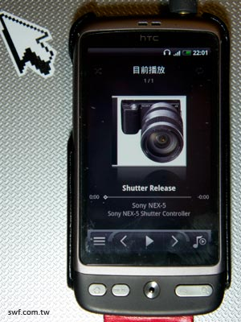
除了聲音格式的紅外線遙控訊號之外，我們必須準備兩個紅外線發射LED（我是從舊的遙控器拆下來的），如下圖般銜接在耳機線，才能把聲波轉換成紅外線：
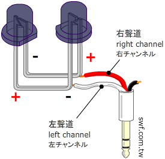
使用紅外線裝置有一個問題：紅外線是在開放空間中傳遞，因此如果你在操作遙控器時，身邊正好也有人在使用相同的設備，那麼，該設備有可能也會受到影響。雖然從隨身聽耳機線推動的紅外線訊號不強，不太可能會影響到其他設備，不過，為了避免自己的相機受到干擾，操作時最好還是將紅外線埠遮蓋起來。
Sony NEX-5相機的紅外線埠高度，大約是一個樂高積木的高度：
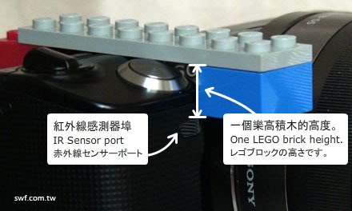
因此，我將紅外線發射LED安裝在兩層相疊的樂高積木下方，正好對準NEX-5的紅外線埠，同時也遮蓋了紅外線埠。積木的側面設置一個立體耳機插孔，方便使用立體聲延長線連接此紅外線發射器和隨身聽：
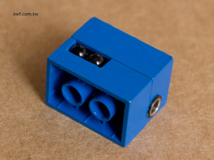
這是紅外線發射器的另一面：
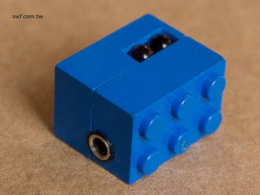
DIY紅外線遙控器
底下是樂高積木版的紅外線發射器所需的全部零件：
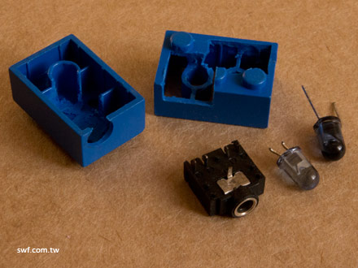
先把兩個紅外線發射LED焊接在立體聲插座上：
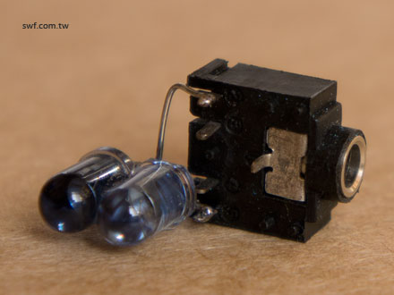
另一面長這樣：
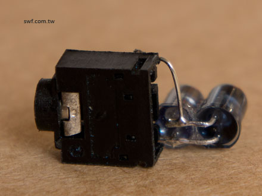
然後把立體聲插座黏在事先切割好的積木裡面，後面用一小塊橡皮擦塞住縫隙。最後再把兩片積木黏在一起就完成了！
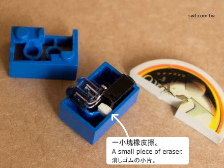
做好積木版的紅外線遙控發射器之後，再用積木拼裝一個“ㄇ”字形的架子跨在NEX-5本體上固定，並且接上立體聲延長線和隨身聽。
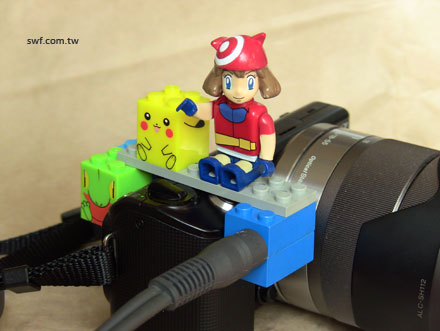
先啟動NEX-5的遙控器模式，再從隨身聽播放快門訊號聲音檔，就能遙控NEX-5啟動清脆的「喀嚓」快門了 :-)
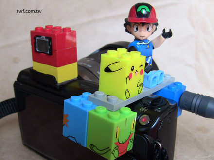
只要把紅外線訊號先錄製好，就能透過這個紅外線發射模組控制設備。 您可能想到了，既然紅外線訊號是透過聲音傳送的，那如果用藍芽立體聲耳機傳送，豈不是等於「藍芽遙控器」了嗎？
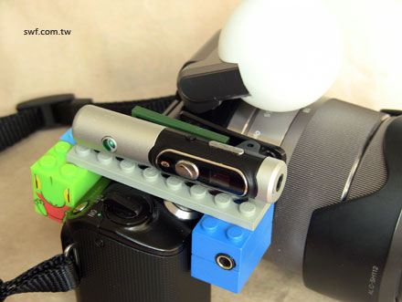
嗯，好主意。我試過了，無效。
拍攝縮時攝影（timelapse）
這個控制器雖然簡單，不過挺好用的，假設您想要讓照相機每隔10秒鐘啟動快門，也就是拍攝出縮時攝影（timelapse）效果，只要在代表控制訊號的聲音檔後面加上10秒長的靜音，並且在播放時，將此聲音檔設定成循環（loop）播放即可。